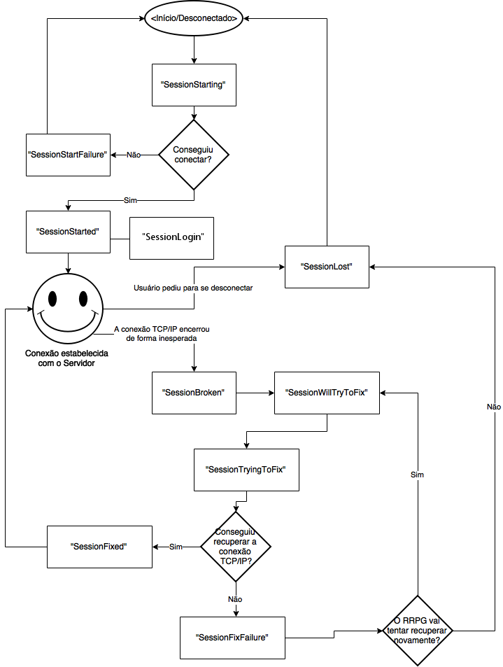

Mensagens de Conexão
Mensagens-Eventos sobre a conexão com o RRPG Server
| "SessionLost" |
|---|
Mensagem enviada quando o RRPG perder definitivamente a conexão com o servidor.
| "SessionStarted" |
|---|
Mensagem enviada quando o RRPG conseguir estabelecer uma conexão com o servidor.
| "SessionLogin" |
|---|
Mensagem enviada quando o processo de Login do usuário for concluído com êxito. Quando esta mensagem-evento for enviada, significa que o usuário está logado e algumas informações sobre sua conta e lista de contatos também estão disponíveis.
| "SessionStarting" |
|---|
Mensagem enviada quando o RRPG iniciar o processo de estabelecimento de uma nova conexão com o servidor.
| "SessionStartFailure" |
|---|
Mensagem enviada quando o RRPG não conseguir estabelecer uma nova conexão com o servidor.
Propriedades da mensagem:
-
- reason - uma cadeia de caracteres contendo a razão da conexão ter falhado.
| "SessionBroken" |
|---|
O link da conexão foi quebrada, isto é, a conexão TCP/IP com o servidor foi desfeita. Mas não está tudo perdido ainda: Talvez seja possível reestabelecer a conexão, e o RRPG vai tentar isso!
| "SessionWillTryToFix" |
|---|
O RRPG tentará recuperar o link quebrado da conexão daqui a alguns milisegundos!
Parâmetros:
-
- waitTime - Um número contendo quantos milisegundos o RRPG vai esperar até a tentativa de recuperação.
| "SessionTryingToFix" |
|---|
O RRPG tentará recuperar o link quebrado da conexão AGORA!
| "SessionFixed" |
|---|
O RRPG conseguiu recuperar o link da conexão. A conexão está normal agora!
| "SessionFixFailure" |
|---|
Uma tentativa de recuperar o link da conexão falhou... Se a mensagem "SessionWillTryToFixIn" for disparada logo a seguir, então o RRPG continuará tentando consertar o link. Se a mensagem "SessionLost" for disparada logo a seguir, então o RRPG não vai mais tentar recuperar o link.
Estados de Conexão do RRPG
As mensagens-eventos sobre a conexão do RRPG são disparadas conforme o seguinte fluxo:

Created with the Personal Edition of HelpNDoc: Effortlessly Support Your Windows Applications with HelpNDoc's CHM Generation